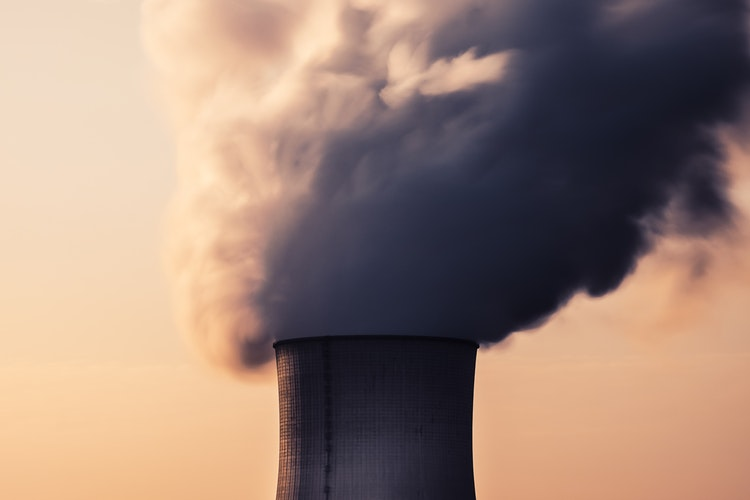
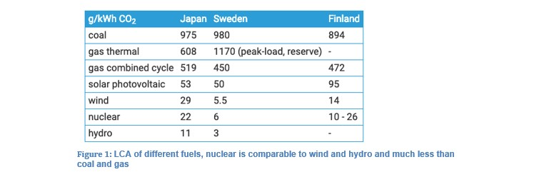
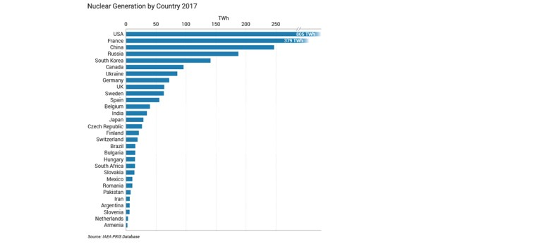

Introduction to Nuclear Power
Part 1
Nuclear power is a source of energy that is widely debated in all corners of the world. The most common reason why people are negative to nuclear power is the danger of episodes like Chernobyl and Fukushima, and issues regarding waste disposal. Yet the potential of nuclear power as an alternative to fossil fuels is obvious. In Norway nuclear power is only on the research stage, but there is a big potential even for Norway.

Nuclear in Europe
European countries like Russia, Germany and France have used nuclear power for many years. In the Nordic countries Finland and Sweden have been working with nuclear power for some time, while Denmark have specialized in wind power. Norway has big reservoirs of oil and also water for hydropower. The big reservoirs of thorium gives Norway the possibility to follow in the footsteps of Finland and Sweden.
Nuclear in the Nordics
As of 2018, Sweden has eight nuclear power reactors providing about 35% of its electricity. Unfortunately the government in Sweden has decided to phase out nuclear power slowly, and high taxes and lack of subsidies makes it difficult for nuclear power. Sweden has some uranium mineralization but no mines, so Sweden imports most of the nuclear fuel. Sweden is in good control of its nuclear waste. The CLAB interim repository treats high-level waste like used fuel with a capacity of 11,000 metric ton, and have been in operation since 1985. The waste is stored underwater in a rock cavern for about 40-50 years. Then it will be encapsulated in copper canisters with a cast iron internal structure, and then placed in a 500-meter-deep repository in granite.
Finland, the Nordic county besides Sweden with commercial nuclear power has four nuclear reactors providing about 30% of its electricity. Unlike Sweden, Finland is looking for investment in the nuclear sector with a fifth reactor under construction. The government intends to replace coal use by 2030 through increased carbon taxes and commissioning two nuclear power reactors. Finland is dependent on Russia and Sweden for import of both fossil fuels and electricity, but with increasing commitment for nuclear power Finland can provide its own energy. Finland has some of the world’s most efficient reactors with advanced technology, and also some of the best waste management in the world. I addition to a fifth reactor is under construction, a sixth and seventh is also being planned in Finland. Finland gets its fuel from countries like Canada and Australia, and it is treated and converted to usable fuel in other countries like Russia, France and Sweden. So far there has been no uranium mines in Finland, but ongoing work is being done to get more research on this field.
Thorium
The Earth’s crust has plenty of nuclear sources, and another fuel that can be used instead of uranium is thorium. There exists more thorium than uranium, in fact four times more. In addition, thorium produces less waste and decay much faster than uranium. It is also less useful as application in nuclear weapons, which many people fear. Less thorium is needed compared to uranium to run a power plant, 250 times less! And as lucky as Norway is with the rich oil and water resources, Norway happens to also have big amounts of thorium. It is even named after the Norse god of thunder, Thor. According to «World nuclear association» Norway have the biggest estimated thorium resources in Europe behind Russia and Turkey, with 87 000 metric ton (approximately 1.37% of world thorium resources). India is the country with the biggest estimated thorium resource with 846,000 metric ton. Other research estimates the thorium reserves in Norway to be closer to 700,000 metric ton. There has been some basic development work conducted in Norway, but not commercially. According to «thorium energy world», a mine of around one cubic kilometer in Norway contain more energy available in thorium than all Norwegian oil and gas reserves from past, present and future. As Norway is one of the richest countries in the world due to oil and gas reserves, it seems that thorium should play a role as an energy source in Norway in the future.
Climate-friendly
Although nuclear power is not renewable like wind, solar, hydro etc. it is not as damaging for the environment as fossil fuels like oil, coal and gas. The reason is that the exploitation of energy from nuclear sources does not emit any C02 or other greenhouse gases. In other words, it is carbon neutral and does not contribute to the global climate change. Over the course of a nuclear power plants life-cycle, a nuclear power plant produces about the same CO2 equivalent emissions per unit of electricity as wind energy. The fact that nuclear power is reliable and can be deployed on a large scale, makes it able to directly replace a fossil fuel plant. While energy demand over the world is still increasing, and people understanding the damaging effects of fossil fuels, nuclear power is an obvious option. A clean, reliable and affordable energy option to help reach the goals set in The Paris Agreement.

Nuclear power also has a solid advantage when it comes to energy density. The heating value of crude oil is about 42-47 MJ/kg while natural uranium is about 28,000 GJ/kg. Although in a normal reactor the heat value of uranium would be closer to 500 GJ/kg. Still, These numbers shows the enormous potential for nuclear power compared to the slightly outdated fossil industry. Also, a nuclear power plant needs only 27 metric ton of fresh fuel to produce 1000 MWh. While a coal power plant would need more than two and a half million metric ton of coal to produce the same amount of electricity.
Uranium
The most used nuclear source is uranium. Uranium exists naturally in the Earth’s crust. Like other elements uranium occurs in different isotopes. The two main isotopes that exist naturally is uranium-238 (U-238) and uranium-235 (U-235). U-238 accounts for about 99.3% and U-235 for about 0.7% of the natural uranium found in the Earth’s crust. To make nuclear fuel from the uranium ore requires first for the uranium to be extracted from the rock in which it is found, and then enriched in the uranium-235 isotope. The ore is usually crushed by a mill, and then ground in water which produce a slurry of fine ore particles. This slurry is then leached with sulphuric acid to dissolve the uranium oxides. Another often-used method is what is called situ leaching. Groundwater with a lot of oxygen injected is circulated through the uranium ore, extracting the uranium. Both methods produce a liquid with uranium dissolved in it. This liquid is then filtered and the uranium gets separated and dried to produce a uranium oxide concentrate. Usually the nuclear reactor requires enriched uranium in which the proportion of the uranium-235 isotope has been raised from the natural level of 0.7% to 3.5-5%. The enrichment process today uses a centrifuge process, but research is looking into laser enrichment. After the enrichment it is converted to uranium dioxide powder, and then pressed to pellets. Pellets are then inserted into thin tubes to form fuel rods. These fuel rods are grouped together to form fuel assembles which are several meters long. A reactor then typically has 350-800 fuel assemblies. Most of the uranium in the world is mined from six countries: Canada, Australia, Niger, Kazakhstan, Russia and Namibia.

The energy in a nuclear reactor is produced from the release of energy from splitting atoms, or fission as it is called. When the nucleus of a U-235 atom captures a moving neutron it splits in two (fissions) and releases some energy in form of heat. Additionally two or three neutrons are thrown off. These neutrons can then again catch new U-235 atoms and split them. When this happens it produces a chain reaction and when this happens millions of times a lot of energy is released. This energy then boils water and steam drives turbines that produce electricity. The reaction needs a moderator to control the process, which is usually water or graphite. About one-third of the used fuel is replaced with fresh fuel every year or two. Besides the release of energy, a nuclear power plant works quite similar to coal or gas powered plants. Today nuclear energy supplies about 10% of the world’s electricity, with 31 countries using nuclear energy.
Sources and credits
Sources for this article is from